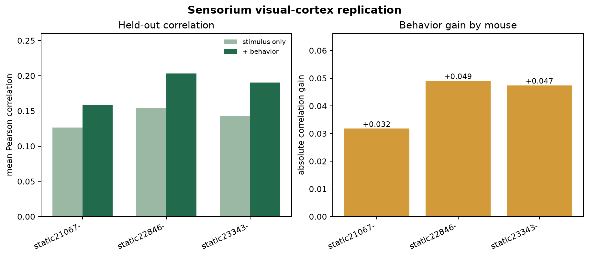
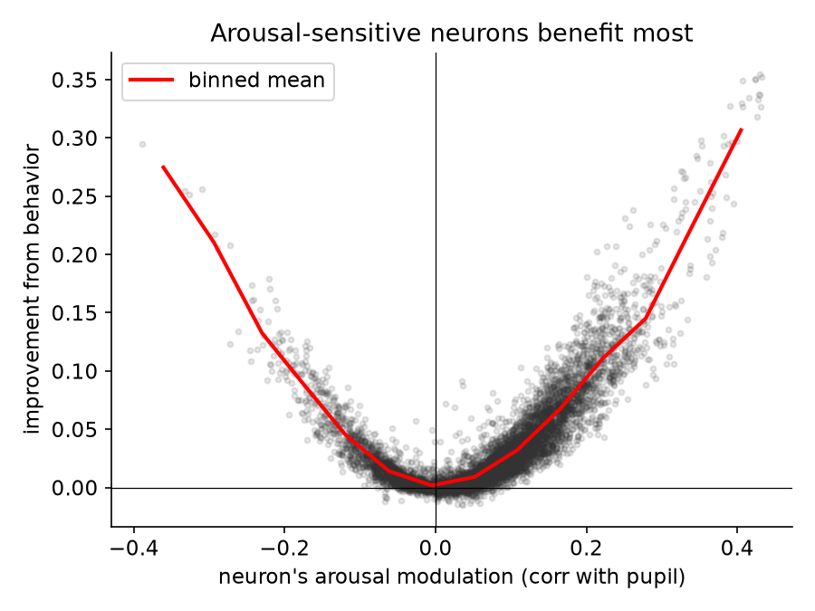
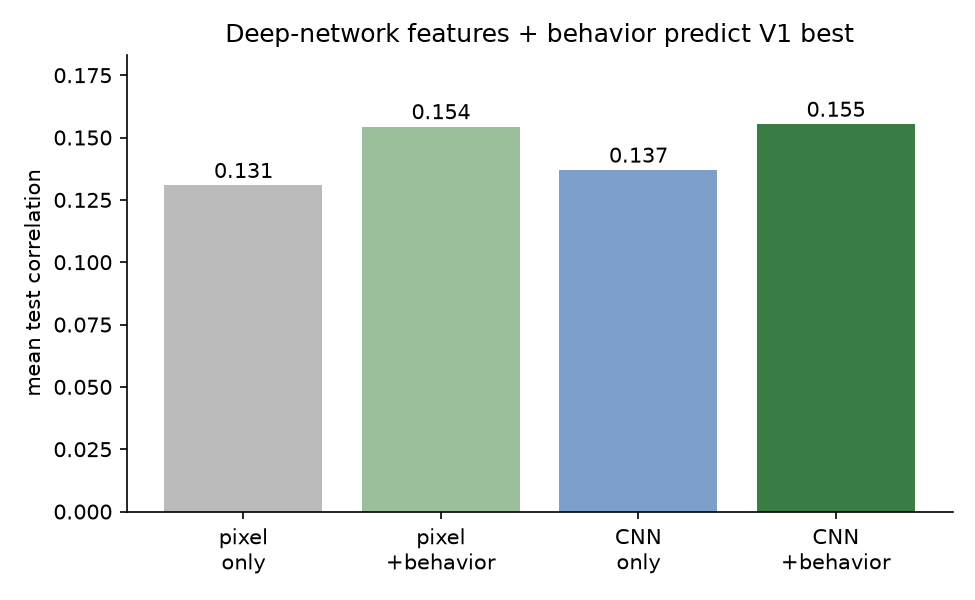

Question
Does adding pupil size and running speed improve prediction of V1 activity beyond the image the mouse sees?
The same image can drive a neuron differently depending on whether the animal is alert or calm. If so, part of what looks like noise should be recoverable from behavior.
Data
- Public Sensorium 2022 recordings, 3 mice
- 7,300–8,400 V1 neurons per mouse (two-photon imaging)
- ~6,000 natural grayscale images per mouse
- Pupil size, pupil change and running speed on every trial
- Official train / validation / test split
Method
- Images downsampled, then 150 principal components (fit on training data only)
- Ridge regression predicts every neuron
- Four models: image only, + running, + pupil, + both
- Score: per-neuron correlation on held-out trials
- Same pipeline and settings for every mouse, chosen before looking at outcomes
Result: behavior helped in all three mice

| Mouse | Image only | + behavior | Gain |
|---|---|---|---|
| 1 (discovery) | 0.126 | 0.158 | +25% |
| 2 (replication) | 0.154 | 0.203 | +32% |
| 3 (replication) | 0.143 | 0.191 | +33% |
Mean held-out correlation. Pupil helped every mouse; running helped by very different amounts.
Who benefits? Arousal-sensitive neurons

In mouse 1, neurons whose activity rose with pupil size (r > 0.1) improved by +0.069 on average, versus +0.014 for the rest.
Could it be an accident?
- Shuffled behavior: real gains of +0.03 to +0.05 become about −0.0005 in every mouse
- Leave one mouse out: mean gain stays positive (+0.040 to +0.048)
- Bootstrap intervals within each mouse do not overlap between models
Does a better image model change it?

Pretrained CNN features beat raw pixels only slightly (0.137 vs 0.131). Behavior helped either way, so the result does not depend on the image model.
Takeaways and limits
- Behavioral state carries real information about V1 activity
- Which signal matters (pupil or running) depends on the animal
- Three mice are a replication, not a population estimate
- Predictive, not causal
- Trial order in this release is shuffled, so timing was not testable